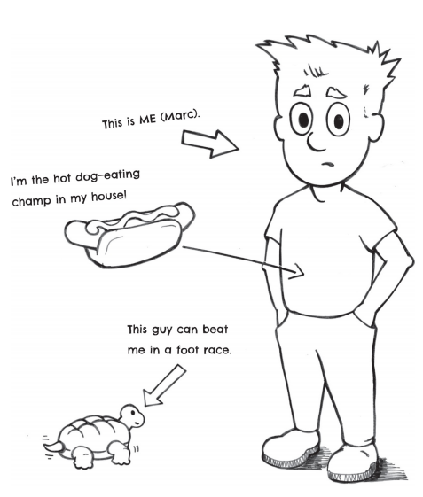
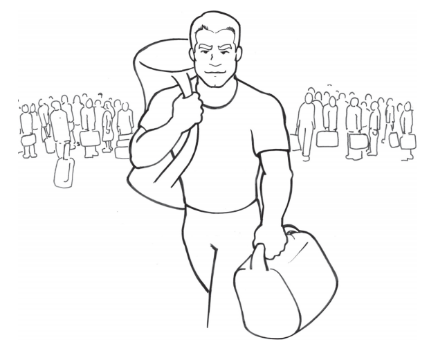

CHAPTER 1: THE WORST YEAR
Tomorrow is the last day of school, and I CAN’T WAIT FOR IT TO BE OVER!! This has been the worst year EVER! The bad part is that I don’t see how next year is going to be any better at all. Fifth grade was horrible—I’m afraid sixth grade will be EVEN WORSE. Why was it so bad? Where do I begin?
Top five reasons why fifth grade was HORRIBLE:
1. It’s school! I’m sitting at a desk ALL DAY.
2. I learned that I’m dumb! That’s right. All the other grades I thought I was “smart.” But this year was a FAILURE! I still don’t know my times tables! How the heck am I going to make it through next year?
3. School lunches. They call it “pizza.” I have no idea why. Since when does a piece of white bread count as pizza crust???????
4. Gym class. Most people like gym. But at my school we have “tests” and I completely stink. Especially at PULL-UPS. Guess how many pull-ups I can do? ZERO! I can do ZERO pull-ups! I’m a disgrace to ten-year-olds—and the whole class knows it. Even the girls. Especially the girls that can do more pull-ups than me!!
5. Field trips. Just like gym class, most kids like field trips. Well, we go to one place for field trips: Mount Tom. We go there in the fall before it gets too cold and in the spring when it starts to get warm. But here’s the thing: Mount Tom isn’t a mountain. It’s a lake. Here’s the problem: I CAN’T SWIM! I hid it pretty well during our fall trip. But this spring, kids noticed. “Why don’t you come out in the water?” “Why are you staying on the beach?” “Why don’t you jump off the diving board?” What kind of person can’t even swim? ME: That’s what kind of person! AAAHHH!
6. I know I said top five reasons, but there is one more, and it’s probably the biggest reason: Kenny Williamson. He is big and he is MEAN. He rules the jungle gym. He even calls himself “King of the Jungle Gym” or “King Kenny”!! If any other kids want to play on the jungle gym, they either have to be friends with Kenny or follow his “rules.”
All the teachers talk about how my school is “bully-free.” We even had a No Bully Day, where we talked about bullying and how bad it was and how we should tell the teachers if we saw it happening. Well, let me tell you, Kenny is definitely a BULLY, and he definitely is in my school. And no one says anything to the teachers about it!
Those are the top reasons that fifth grade was horrible, and sixth grade isn’t going to be much better! I can’t wait for school to be over tomorrow so the suffering can STOP and summer can START!
This summer is going to be AWESOME. Yes, it is cool that I won’t have to be in school—but something even cooler is happening. My uncle Jake is coming to stay with us for the whole summer!
He has been a Navy SEAL for eight years and is getting out of the Navy to go to college. Before he goes to college, he is going to stay with us the whole summer long. A Navy SEAL! FOR REAL. IN MY HOUSE!!!!!
Uncle Jake is the best. First, he is super cool because he is a Navy SEAL. He fought in real wars. My mom says he was “on the front lines.” That means he was face-to-face with the bad guys. Whoa! Uncle Jake is also awesome because he is the COMPLETE OPPOSITE OF ME. I am weak—he is strong. I am dumb —he is smart. I can’t swim—he can swim with a backpack on! I’m scared of bullies—bullies are scared of him!
Anyway, I haven’t spent too much time with Uncle Jake because we live in California, and he has been stationed in Virginia for a long time. I hope he doesn’t think I’m such a DUMB WIMP that he won’t even hang around with me! Maybe he won’t notice?
AAHHHHH!!! Of course he will. He is a tough guy! I’m a dork! Well, I guess I will find out soon.
CHAPTER 2: THE WORST DAY
Today was the absolute worst day OF MY LIFE. I know the last day of school is SUPPOSED to be fun, but let me tell you, it was miserable, horrible, awful, and terrible. How can that be? Where do I start?
First, it was Sports Day, which is SUPPOSED to be fun. It means we are out at the recess area all morning playing a bunch of games and challenges and stuff. Not just stuff like soccer and basketball but also things like three-legged races, bobbing for apples, and potato-sack races. We would do each activity for a while until we were told to “rotate” by the teachers, and then we would go on to the next activity. At first it wasn’t so bad. No one was taking it that seriously, and everyone was just kind of having fun.
That meant no one really noticed how LAME I was at all these different sports and games. Especially because Fred Turner was in my group, and he is even worse than I am at everything. So it wasn’t too bad.
UNTIL PULL-UP TIME. That’s right. One of the activities we were doing was pull-ups and push-ups and stuff on the jungle gym. WITH EVERYONE WATCHING! So I did what any smart, weak kid would do: I HID! I went to the back of the line and just kind of blended in. When the other kids would jump on the pull-up bar, everyone would count for them. Mike Swearington did eighteen. Billy Hacker did twenty-two! Jennifer Phillips, who does gymnastics, did twenty-seven!
There I was, standing in the back watching, hiding, and waiting for this to end.
Then, it was King of the Jungle Gym Kenny Williamson’s turn. He went up and did eleven, which is actually pretty good when you consider how HUGE he is. He didn’t seem to care, until someone yelled from the crowd, “He’s not as strong as he looks!” There was some laughter, and I saw Kenny getting madder and madder. He wasn’t sure what to do until he saw me looking at him, and our eyes locked.
He slowly raised his finger and pointed it straight at me
“What about him?” Kenny barked. The crowd suddenly got quiet as Kenny stood pointing at me
“He hasn’t gone yet! Let’s see what Marc can do!” This was pure evil. Kenny knew very well that I couldn’t do any pull-ups. He had seen me in gym class trying to do one for the last year and failing every time. I shrank farther back into the crowd. “Come on, Marc! Get on up here!” Kenny yelled.
At that moment, someone shoved me from behind, forcing me out of the pack and into the open. I couldn’t hide anymore.
Mr. Maguire, the teacher in charge of this activity, turned and looked at me. “Have you gone yet, Marc?” he asked.
“No, Mr. Maguire. But I’m…” I tried to think of some kind of an excuse. I’m sick? But I just did all the other games. I got hurt? But how could I get hurt watching people do pull-ups? The dog ate my pull-ups?
“Then jump on up there, Marc,” said Mr. Maguire with a stern but encouraging look. “Let’s see what you’ve got.”
“Okay,” I said. I slowly made my way to the pull-up bar. The entire crowd was staring right at me. All I saw were eyes everywhere
“Go ahead, Marc. Get up there,” said Mr. Maguire.
“Yeah,” shouted Kenny. “Let’s see what you got!”
I finally got to the pull-up bar and looked up at it. I wished so hard that this one time I could do some pull-ups. Or that I could just disappear. “Come on, Marc, let’s go,” said Mr. Maguire.
“Yeah, Marc, let’s go,” added Kenny, mocking Mr. Maguire.

The crowd became completely quiet as I reached up. I bent my legs, jumped up, and grabbed the bar. I hung there. I started to pull. Nothing happened. I pulled harder. Nothing happened. I wiggled my body around. Nothing happened. Finally, with all my might, I pulled as hard as I have ever pulled anything in my entire life. I went up about two inches, then stopped. I pulled more but didn’t move any higher. Slowly, gravity brought me back down. I dropped off the bar
“ZERO!!!!!!” Kenny yelled at the top of his lungs. “A. BIG. FAT. ZERO.” The crowd joined in: “Zero! Zero! Zero! Zero!”
I hung my head and tried to become invisible.
“All right, all right,” Mr. Maguire said, trying to quiet the crowd. “Not everyone can do a pull-up.”
Then, from the back of the crowd, someone blurted out, “He can’t swim, either!” Everyone laughed. Even though I know that not being able to do pullups and not being able to swim don’t make you a bad person, I had had enough. I could feel tears building up in my eyes. I didn’t want anyone to see me cry, so I ran. I ran off the recess field, through the courtyard, and behind the library, where no one ever goes. I sat down, and that was it. I cried like a little baby.
That was my last day of school.
CHAPTER 3: THE BEGINNING OF SUMMER
“What’s wrong?” my mom asked as I sat at the table eating breakfast. After yesterday, it was hard to even PRETEND to be happy. I tried.
“Nothing. I’m fine,” I told her with a forced smile.
“Come on, Marc. What’s bothering you?” That is the thing with my mom. She understands enough to know that I’m not happy, but even if I told her what was wrong, what could she do about it? She couldn’t make me stronger. She couldn’t make Kenny Williamson leave me alone. So what is the point in telling her what was wrong? If I did, she would say something like, “Well, that boy is just jealous because you are smarter than he is,” or “You’ll get stronger when you get a little older,” or “Don’t worry about what other people say, because I know how very special you are.”
While I know that my mom means well here, the fact of the matter is Kenny Williamson is not jealous of me. It doesn’t matter if I get stronger when I’m older, I’m weak now!!!!! And of course my mom thinks I’m special—she’s my MOM! So seriously, there was no point in telling my mom what was really wrong.
“I’m just going to miss my friends over the summer,” I told her.
“Awwwwww,” she answered. “Well, we can make sure you get to play with them a lot this summer.”
“Thanks, Mom,” I told her, hoping that she would just leave me alone. My mom is really nice, but she works a ton and is always at her office, and a lot of the time it seems she just doesn’t really understand me. That’s okay. I know she is trying to be nice. My dad is nice, too, but he is gone most of the time, traveling for his job and stuff.
“I’ll tell you what,” she added, “your uncle Jake arrives in about an hour. Do you want to come pick him up with me?”
“YES!” I shouted. I had forgotten the exact day that Uncle Jake was supposed to get here, but now I remembered it was today! “Yes! That’s great.”
“Okay, then,” she said. “Clear the table and we’ll head out.”
After I cleaned up the table, we got into the car and headed to the airport. I was excited about Uncle Jake coming, but I was also kinda nervous. He’s a Navy SEAL—an official tough guy. And not tough like the guys in the movies that just act tough—Uncle Jake is the real deal. So, even though he probably won’t want to hang around with me much, at least I will get to see him a little
At the airport, we parked the car and headed to the terminal to pick him up.
I stood there looking through the glass at the passengers coming down the hallway. There were families, businessmen, college students, and a bunch of other regular-looking people arriving and walking from their planes. Then I saw him. He was walking at a steady pace, right toward us.
He seemed to know where he was going. He had a very serious look on his face. He looked STRONG. He was wearing a short-sleeved shirt, and his arms were big! While all the other people seemed to be thinking about themselves, Uncle Jake was slowly looking around, scanning the whole area. Then he saw my mom and me. His head locked on our position. We waved.
Suddenly, his serious face cracked, he let out a big smile, and he waved back to us. AWESOME! He walked through the door and came over to us. He hugged my mom and said, “How ya doin’, big sister?” which was funny because he was A LOT bigger than she was. Then he looked at me, held out his hand, and said, “Little man?” I shook his hand. His hand was different. It was big and strong and rough—it felt like leather more than skin. “Is that all ya got?” he said.
“What?” I replied, not entirely sure what he was talking about.
“That handshake. Is that as hard as you can squeeze?”
I squeezed harder.
“Better,” said Uncle Jake. “We’ll work on that.”
“Okay,” I replied. COOL! We were going to work on that. That means we were going to work together. So I guess we will do some stuff together! We made our way over to the baggage claim so Uncle Jake could get his bags. He had one green army backpack on and another camouf lage duffel bag. He threw the duffel bag at the ground in front of me.
“You carry that—it will make you stronger,” he said with a smile on his face.
“No problem,” I told him, happy to be able to carry a really cool-looking army bag. I picked it up—it was heavy—and put it over my shoulder. We started to walk back to the car.
This was AWESOME. Uncle Jake is tough—but he isn’t just tough. He is also cool and NICE.
This is going to be the best summer ever.
CHAPTER 4: ROOMMATES
Well, today was awesome and then terrible and then, I think, awesome again. When we got home, I realized Uncle Jake was staying in my room! We were going to be roommates for the whole summer. My mom has a little fold-out guest bed that she put in my room for me. The mattress is thin and kind of uncomfortable, but I don’t care. Uncle Jake is using my bed for the summer. So we got all that figured out, and Uncle Jake put his stuff in some of my drawers and some other stuff in my closet. Then we went down and ate dinner.
During dinner, my mom asked Uncle Jake a bunch of questions about everything. He has been in the SEAL Teams for eight years, and he told her about a bunch of the cool things he has done. They are all things that any kid would love to do, like parachuting, scuba diving, rappelling out of helicopters, and blowing things up with explosives—all the time!
He also talked about being in war. He said the hard part wasn’t the missions or carrying all that gear or being afraid—he said the hard parts were the times when his friends got hurt or killed.
After dinner, we went upstairs to go “square away” (that’s an Uncle Jake term!) my room before it got too late. This is when things got BAD.
Uncle Jake asked me what I was doing the next day. “Are you going to meet with some of your friends? Go play some basketball or soccer or something?”
“I’m not that great at sports,” I told him

“You don’t have to be good to have fun.”
“Well, it’s not really that fun when you aren’t good,” I answered, already feeling like a big wimp.
“Okay. How about a swim? There has got to be someplace to go swimming around here, right?”
When he said that, I suddenly felt terrible. Here I was with my own uncle who wants to go swimming with me, but I can’t because I don’t even know how to swim! I felt like I didn’t even deserve him as an uncle. Tears suddenly welled up in my eyes, and I blurted out, “I can’t swim.”
“What do you mean you can’t swim?” he asked.
“I mean I can’t swim.”
“At all?” he questioned me.
“At all. I can’t swim at all.” As I said that, I finally just burst. Tears came streaming out of my eyes. Then I told him everything that I didn’t tell my mom. Everything. “Not only that, but I can’t do any pull-ups. I’m probably the weakest kid in the school.” The tears really started coming down now. Even though I was looking like a complete baby, I couldn’t stop myself from crying or talking. “And it’s not just that. I don’t know my times tables yet! I’m almost eleven years old, and I don’t know my times tables!!!!”
“Okay, you know there’s—” Uncle Jake was trying to tell me something, but I cut him off. I can’t believe it, but I butted right in and started talking over him.
“And the worst part is, I get bullied. Almost every day I have to do what Kenny Williamson tells me to do!!”
“Who’s Kenny Williamson?” asked Uncle Jake. “A teacher?”
“No!” I shouted. “He’s another kid. A bully!”
All right, I get it,” Uncle Jake said. “Is that it?”
“Is that it???? I get picked on by a bully, made fun of because I can’t do any pull-ups, I don’t know what eight times seven is, and I don’t even know how to swim!! How much worse can it get???” I said loudly.
“Good,” said Uncle Jake.
“Good?” I asked. “How the heck is all that good?”
“It’s good because every one of those problems is something you can change. Every one of them.”
I didn’t know what to say. Here I was, a complete mess, crying over my situation. But Uncle Jake was calm, so calm it made me start to get calm, too.
“Look, Marc,” he said, “when I joined the Navy, I could only do seven pullups. Now I can do forty-seven. I wasn’t a great swimmer. Now I can swim like a fish. I also didn’t do that well in school, but when I got into SEAL training, I learned how to learn and ended up doing great on all the academic tests. And finally, when I first got into the SEAL Teams, I knew nothing about fighting. But now I can handle myself in any situation.”
“Of course you can! You’re a Navy SEAL!”
“You are missing the point. I wasn’t born like this! I had to work for it. I had to learn it. I had to EARN it. And what I am telling you is that instead of being a wimpy kid, you can be a Warrior Kid.”
WARRIOR KID??!?!?! I wasn’t exactly sure what that really meant, but it sounded AWESOME.
“What is a Warrior Kid?” I asked.
“I’ll tell you about it tomorrow. You need to go to bed. But I think a Warrior Kid is exactly what you need to become.”
Uncle Jake walked out the door to go downstairs and talk to my mom. WARRIOR KID. WARRIOR KID. WOW.
I lay on my mattress thinking about this as I drifted off to sleep.…
CHAPTER 5: WARRIOR KID
When I woke up the next morning, Uncle Jake wasn’t in my room anymore. I didn’t know where he was. I walked downstairs. He was at the breakfast table with my mom.
“What’s up, sleepy?” he said. I rubbed my eyes. He was right; I was still sleepy.
“What have you been doing?” I asked.
“Well,” he replied, “I woke up, worked out, went for a run, took a shower, reviewed some reading that was recommended for college, and now I’m having breakfast with my sister.”
“You did all that this morning?”
“I sure did.”
“What time did you wake up?”
“Zero-dark-thirty,” Uncle Jake replied.
“What the heck is that?” I asked.
Uncle Jake smiled. “That means I get up early. Very early.”
I had no idea anyone could wake up that early. I have a hard time getting out of bed by seven to get ready for school. Uncle Jake must have gotten up around five!
“You and I need to talk today, don’t we?”
“Yes, we do,” I replied anxiously.
“All right, then. Finish your breakfast, and we’ll go for a walk.”
I scarfed down some food, threw on my clothes, and told Uncle Jake I was ready
“You sure you’re ready?” he asked with a serious look on his face.
“I’m pretty sure,” I told him even though I felt nervous.
“All right, then,” he told me. “Let’s go.”
We headed out the door and down the street toward the park
“So, Marc, what do you know about being a warrior?” Uncle Jake asked me as soon as we turned the first corner.
“I don’t think I know anything about being a warrior,” I told him.
“Okay. Well, then do you even know what a warrior is?”
“Yes. I mean I guess I know. A warrior is someone who fights in wars … right?”
“That is one part of it. But what else?”
“I’m not sure what else.”
“So do you think that the only way to be a warrior is to fight in wars? And do you think that anyone who fights in a war is a warrior?”
“I guess so,” I answered.
“Well, you guessed wrong. There is a lot more to being a warrior than just being in a war. Warriors are people that stand up for themselves. They face challenges. Warriors work hard to achieve goals. They have the discipline to overcome their weaknesses. Warriors are people that constantly try to test and improve themselves. And yes, war is the ultimate test, but not all warriors go to war.”
“But how can a kid be a warrior?” I asked. It just didn’t seem like a kid would be able to do all those things that Uncle Jake was talking about
“By doing everything I just said. A normal kid doesn’t push himself—a Warrior Kid does. A normal kid doesn’t work constantly to improve himself—a Warrior Kid does. I look at all these problems you cried to me about yesterday. A Warrior Kid wouldn’t cry about those problems. A Warrior Kid would do something about those problems.”
“Do what?”
“Do what? Do whatever it takes. Every problem you have can be overcome. EVERY ONE OF THEM. You can’t do pull-ups? You work out and get stronger until you can. You don’t know your times tables? You study and train your mind until you know them cold. You can’t swim? You learn how. You get picked on? You learn to fight.”
“Fight?” I asked.
“Yes, fight. Just like anything else in the world, there are techniques to fighting—like learning a sport—and when you know the techniques and practice fighting—like learning a sport—and when you know the techniques and practice them, you can defend yourself from anyone.”
“You really think I could do all that?”
“I know you can. Like I told you last night, I had to transform myself when I got into the Navy. I had to get stronger. I had to learn to fight. I even had to learn to learn. But I did it. And if I did it, so can you. Do you want to? Do you want to overcome all these challenges you face?”
“Of course!” I shouted, feeling pretty fired up about everything Uncle Jake was telling me. “Who wouldn’t?”
Then Uncle Jake got really serious. Anything resembling a smile left his face. He looked me straight in the eyes and said, “But let me tell you something. This will not be easy. This will be harder than anything you’ve ever done before. I will help you, but you are the one that has to do the work. You have to want the change. That has to come from you. Do you want to do this?”
I was a little nervous after what he just said, but the thought of overcoming so many problems was like an explosion in my head. “Yes, I do.”
“I need a commitment because I don’t want to waste my time on you. Do you promise?” Uncle Jake asked as he held out his hand for a shake.
I felt the most pressure I have ever felt in my life. I looked him in the eyes and said, “Yes. I promise.” We shook hands.
“We start tomorrow morning,” Uncle Jake said quietly
We walked through the park and back to the house without saying another word.
Something had already changed.
CHAPTER 6: THE PROGRAM BEGINS
OH, WOW! Today was just crazy—and I mean CRAZY! I was sound asleep in my bed this morning, peacefully dreaming about a double cheeseburger with fries and a milk shake from my favorite restaurant, the Classic Malt Shoppe.
So there I was, enjoying this lovely dream. The food had been delivered and was sitting in front of me, and I was just about to take my first bite of that delicious double cheeseburger when—CLANG! CLANG! CLANG! CLANG! A shocking noise scared me half to death. My heart nearly jumped out of my chest. I thought I was being attacked by aliens from outer space who used broken, old drum cymbals as their main weapon!
Then I heard the voice of one of the alien monsters yelling at me, “GET OUT OF BED!” I immediately thought that this alien sounded an awful lot like Uncle Jake. Yep, you guessed it—that was because it WAS Uncle Jake. He had a broomstick and a metal garbage can, and he was banging them together and yelling at me to get out of bed and give him fifty push-ups. Still confused and thinking about the double cheeseburger I was about to dig into in my dream, I told the alien that I didn’t think I could do five push-ups, so fifty was out of the question.
But Uncle Jake didn’t care at all about my cheeseburger or how many pushups I could do. He put the garbage can next to my head and banged EVEN LOUDER! I rolled out of bed and did nine push-ups before I fell flat on my face.
When I finally looked around, I realized that it was STILL DARK OUTSIDE! I asked Uncle Jake what time it was, and he said it was time to get up and get busy!!!
That is how my day started. From there Uncle Jake showed me a bunch of exercises —and then made me do them. The weird thing was that all these exercises had strange names that seemed to put a big smile on Uncle Jake’s face. “Star jumpers.” “Burpees.” “Diamond push-ups.” “Divebomber push-ups.” “Supermans.” “Jackknives.” “Belly busters.” And let me tell you, even though these names sound funny, THERE WAS NOTHING FUNNY ABOUT THEM AT ALL. They hurt! But Uncle Jake seemed to do them all so easily. Then Uncle Jake gave me a test. I had to do as many squats, push-ups, and sit-ups as I could in two minutes with one minute of rest in between. I did twenty-three squats, fourteen push-ups, and eighteen sit-ups. Then Uncle Jake did the same thing. He did 104 squats, 108 push-ups, and 122 sit-ups!!!!!
I told Uncle Jake I was a WEAKLING! Then he explained to me that I was only weak right now because I had never trained before—never worked out. “In order to make your body strong,” he said, “you have to make it work.” Then he told me that it all started by getting up early in the morning and “GETTING AFTER IT.” I asked if maybe, instead of waking up so early we could just do our workout a little later in the day, perhaps at a more REASONABLE time.
Uncle Jake said NO WAY. He said that pushing yourself began every day with PULLING YOURSELF OUT OF BED!
I asked him if that meant I had to have a GARBAGE CAN BANGED IN MY EARS every day.
He said no—as long as I was up and out of bed early enough (!!!!!!), there would be no garbage can!
So it was either get out of bed early or have a garbage can banged in my ears!!
I wasn’t so sure I liked this program! But I did have to say one thing that surprised me. Doing all those exercises in the morning actually made me feel better all day. I felt awake and good and like I had extra energy. So even though the early wake up and the exercising was kind of rough, I really liked the way it made me feel for the rest of the day. It was worth it!